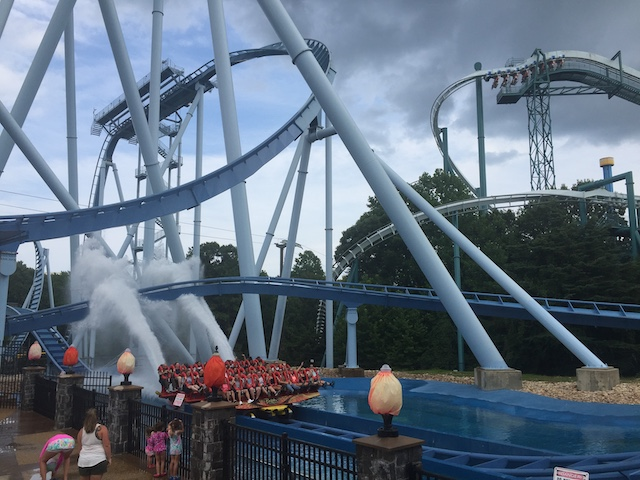
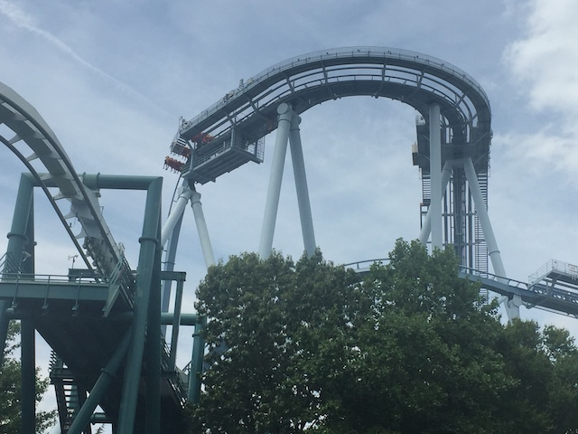

| |
Griffon Review

For today's review, we are heading to Busch Gardens Williamsburg to review Griffon. The parks Dive Coaster. And....this is one of the better ones. I know this constantly gets compared to Sheikra since....they're super similar rides. I know Griffon is a little bigger, has bigger trains, and has a 2nd Immelmann. But people generally pick Sheikra because it has better theming. But...I still slightly prefer Griffon since....that second immelmann. But both are great rides. Speaking of which, let's hop on. Once you board the bigass rows, you take your seat and pull down the OTSR. The seat is fairly high up due to the elevated seating for the fact that it's a dive coaster. Once we get our restraints checked by the ride operators, say goodbye to the floor and away we go! We roll through a turn out of the station and head straight for the lifthill. Now on most coasters, the lifthill isn't that steep and it's just a climb up to the top. However, Griffon's lifthill is about as steep as most coasters first drop. I know it still doesn't seem that impressive since...vertical lifts are common nowadays. However....this is still pretty cool. Then we crest the top of the lifthill. We creepily roll around the turn at a pretty slow pace. You get a lovely view of the trees and the sky as we roll through the turn. I know this is supposed to increase anxiety in most riders, however....good luck freaking me out! I jump off 70 ft cliffs for fun! Then it appears that we've met a dead end. Stopping right at the edge of the first drop. Looking straight down and enjoying the amazing view. And then, it drops us. And we go straight down. And no matter how many of these you do, a 200 ft vertical drop is always gonna kick ass. And Griffon is no exception. We drop down to the ground, flying at 70 mph and head straight into an Immelmann. Now Dive Machines never really have strong forceful inversions. Partially because they have such wide trains. But I would like to see a snappier Dive Machine one of these days. Still, it's got some hangtime, and that's always fun. We then curve up into the mid course brakes. Wave hello to Loch Ness Monster before we drop right into the second vertical drop. While this vertical drop isn't nearly as big as the first one, you have to admit that it still has some nice airtime. And from here, we go through the element that slightly puts this ahead of Sheikra. The second immelmann. Is it amazing? No. Is it super forceful? No. But it's fun, has some hangtime, and is just another fun element that I enjoy. We then go through a tiny little bunny hop (there's no airtime here), and right into the standard ending of all major Dive Machines. The Water Splash. While it's awesome for filming, it does nothing but act as a giant set of trim brakes on the ride. We then use the rest of our speed to make it up the hill. Then we go through a big long turn to enjoy some speed before it all gets sucked away by the final brake run. Sure, this is far from the best ride ever, but you know what? Griffon is fun! It's just a really fun ride! One that I would HIGHLY recommend checking out during your next visit to Busch Gardens Williamsburg.
8/10
Location: Busch Gardens Williamsburg
Opened: 2007
Built by: B&M
Last Ridden: July 26, 2019
Griffon Photos







Home
|